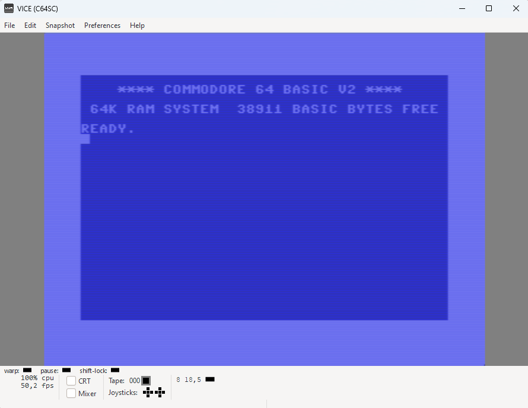
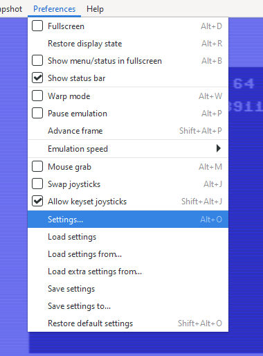
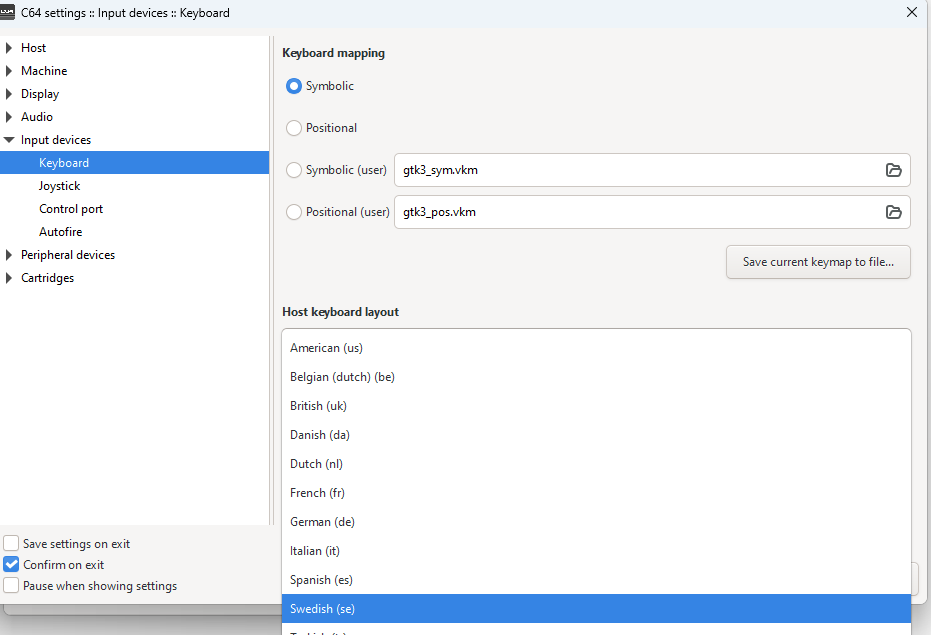
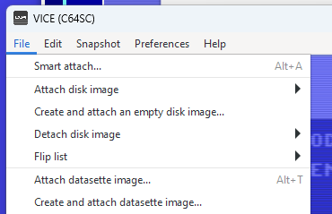
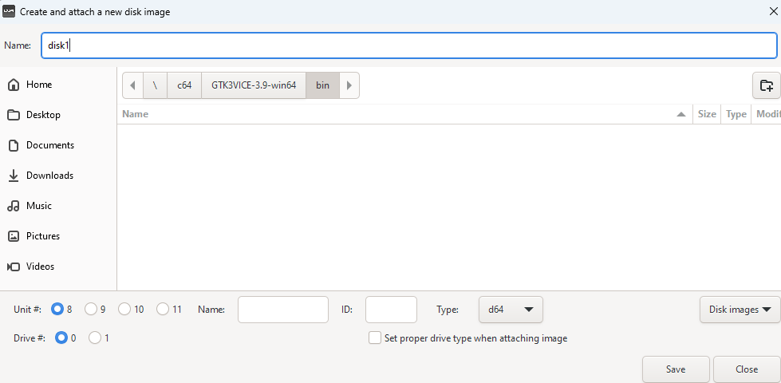
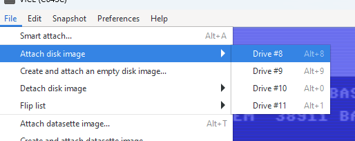
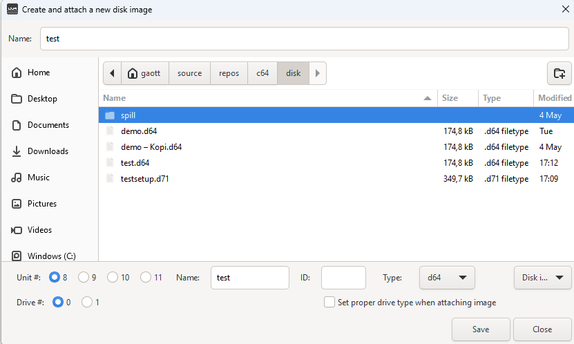

Set Up av C64 miljø
For å kunne ha gleden av å oppleve de gode gamle dager, må man enten ha en C64 selv eller så sette opp en miljø ved hjelp av et emulator.
Her er stegen man trenger for å komme i gang:
- Last ned en emulator. Dette kan man finne her vice emulator eller gå rett på den jeg kommer til å bruke som er GTK3VICE-3.9-win64.zip.
-
Zipp opp filen til ønsket sted på og naviger inn til relativt fra der man zippet opp filen
\GTK3VICE-3.9-win64\bin og kjør x64sc.exe
- Tips for full sceen bare dobbleklikk i emulator viduet
-
Når emulatoren er started vil det se slik ut:
 -
Emulatoren er satt opp med Engelsk tastature. Jeg har måttet gjøre dette hver gang jeg starter emulatoren. Så for å sette opp med noe nærmere Norsk:
Velg setting
Velg enten dansk eller svensk
 -
Vi skal bruke disker i emulatoren, får å kunne lagre den fantastiske koden vi lager, og lære oss hvordan man gjorde det i de gode game dager.
For å lage en ny disk følg disse stegene:
Velg Create and attach new disk image
Gi disken et navn, husk å skriv navn i teskt boksen under også. Jeg fikk problemer når jeg ikke gjorde det. Så trykk lagre
Om kan ønsker å koble til en ekisterenede disk kan man følge disse stegene:
Velg file Attach image, så velg Drive #8
Naviger til der disken er lagret. Fil typen som er mest vanlig er [navn].d64.
Om du har lyst å prøve en disk med innhold i kan du laste ned den her. For så å attache den og skriv LOAD "TEST",8 etterfukt av RUN. Får du en melding på skjermen som ikke er en feilmelding, så er du good to go. Last ned test disk